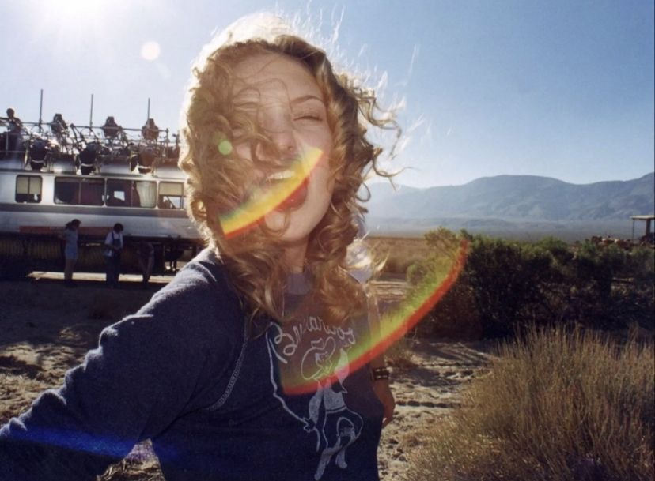

Inspired by the Beatles song and the character from the movie Almost Famous, Penny Lane offers high-quality vintage finds for the conscious shopper. The brand was created with the intention of spreading sustainability awareness. Each item is meticulously hand-selected, ensuring the shoppers have access to only the best in style and sustainability. The collections consist of clothes, accessories, and home goods that are timeless and also pieces for everyday wear.
Founded by Mia Bodenhorn with the importance of fashion sustainability in mind.